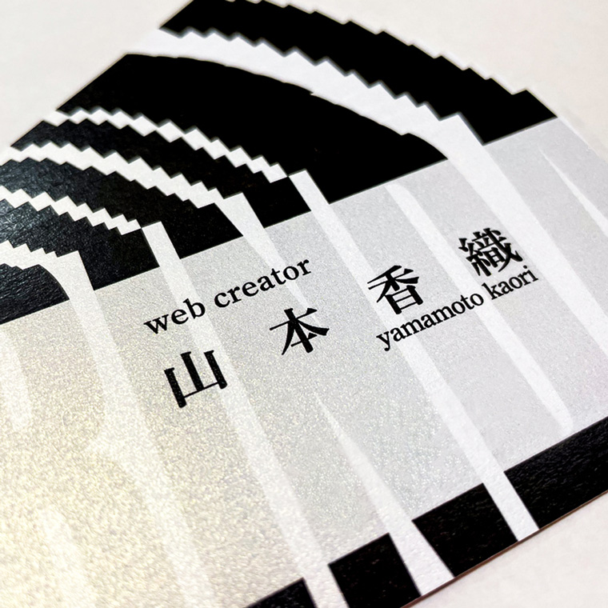
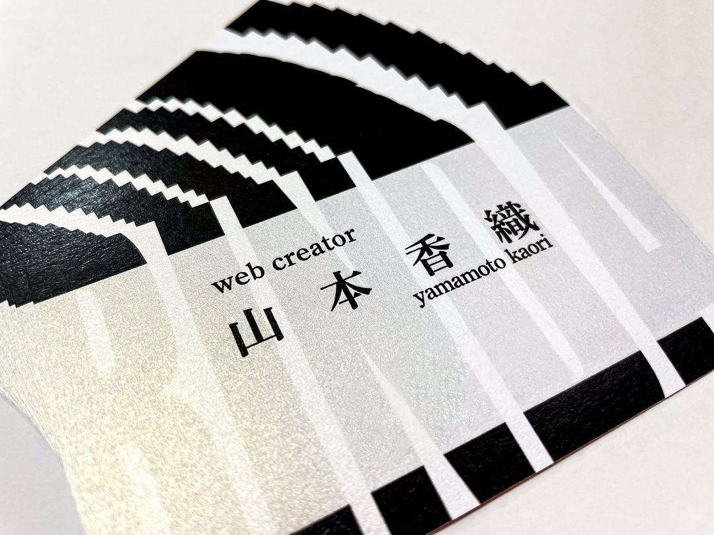
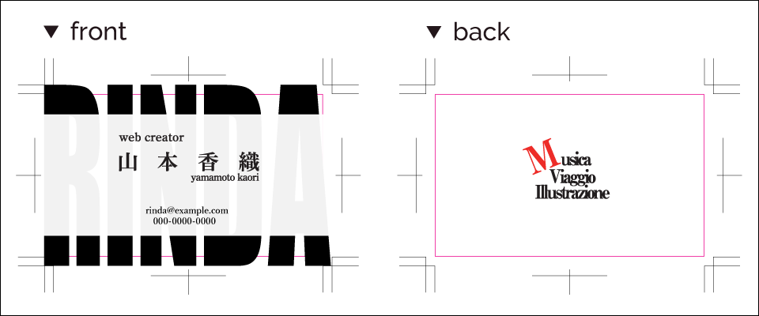
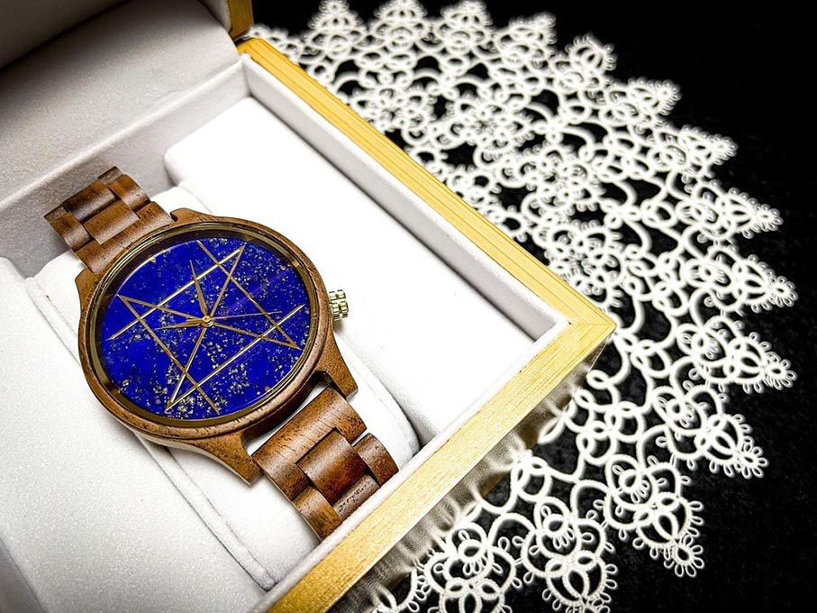
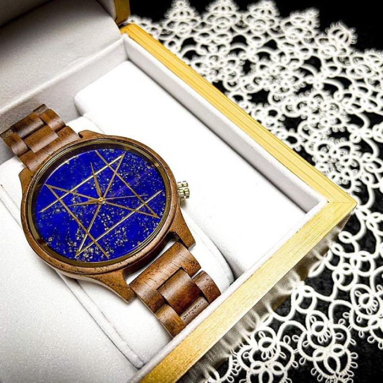
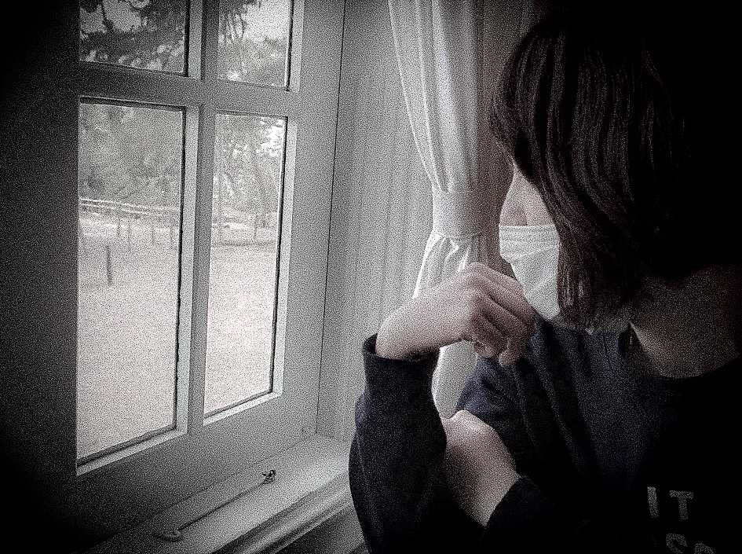

Rinda's
portfolio site
scroll
portfolio
-

  趣味用名刺
製作年：2021年
製作期間：2日
使用ツール：Illustrator
デジタルハリウッドSTUDIOに在籍中、Illustratorを学び始め、最初の課題で制作。
表裏ともフォントは明朝系、配色はモノトーンにし、一見カッチリとした印象を与えていますが、背景には“RINDA”と私のハンドルネームを全面に入れています。
裏面には私の趣味を上から『音楽』『旅行』『イラストを描く』と、イタリア語で入れています。“M”の文字に動きを与えることで、表の“RINDA”と同様、遊び心を取り入れ親しみやすさを表現しています。 『ラピスラズリの時計と、』
掲載年：2022年
使用ツール：iPhone12 mini、Lightroom
NOZ timepieces主催、【 第四回 Instagramフォトコンテスト 】にて、《NOZ賞》をいただいた作品。
瑠璃色が美しいラピスラズリの時計に、繊細なタッティングレースを添えました。天然石特有の一点物の特別感と、ハンドメイドのぬくもりの親和性を意識して撮影・加工をいたしました。★NOZ timepieces公式サイト★
click here
（該当のフォトコンページに遷移します） -

『ラピスラズリの時計と、』
掲載年：2022年
使用ツール：iPhone12 mini、Lightroom
NOZ timepieces主催、【 第四回 Instagramフォトコンテスト 】にて、《NOZ賞》をいただいた作品。
瑠璃色が美しいラピスラズリの時計に、繊細なタッティングレースを添えました。天然石特有の一点物の特別感と、ハンドメイドのぬくもりの親和性を意識して撮影・加工をいたしました。★NOZ timepieces公式サイト★
click here
（該当のフォトコンページに遷移します）趣味用名刺
製作年：2021年
製作期間：2日
使用ツール：Illustrator
デジタルハリウッドSTUDIOに在籍中、Illustratorを学び始め、最初の課題で制作。
表裏ともフォントは明朝系、配色はモノトーンにし、一見カッチリとした印象を与えていますが、背景には“RINDA”と私のハンドルネームを全面に入れています。
裏面には私の趣味を上から『音楽』『旅行』『イラストを描く』と、イタリア語で入れています。“M”の文字に動きを与えることで、表の“RINDA”と同様、遊び心を取り入れ親しみやすさを表現しています。
about me
-
Rinda / ヤマモトカオリ
初級のwebクリエイター。
印刷会社にて、ブログ形式のイベント告知ページの作成業務に係る進行管理、それに伴うお客様とのコミュニケーションをはじめ、画像のレタッチを行っている。また、店舗のニュース記事の校閲も担当している。
そして頻度は少ないがホームページの修正や更新、サムネイル制作、簡単なコーディングなどの一部制作業務も行っている。-
Instagram /
@rndfoto08

-
contact /
rinda★example.com

-
Instagram /
@rndfoto08
-

もうすこし踏み込んだ、
わたしのこと。
家電量販店で約10年の販売職を経て、通販会社へ。在籍中、webデザイナーに興味をもつ。同時に、デジタルハリウッドSTUDIOのWebデザイナー専攻に入学。卒業後、web制作会社にてコーダーとして在籍。その後、現在の印刷会社へ。
制作をする側もそれを依頼する側も、大切なのは『お互いを尊重しあい、積極的にコミュニケーションをとること』であると考えています。人との関わり合いを大切に、引き続きwebの領域で邁進いたします。